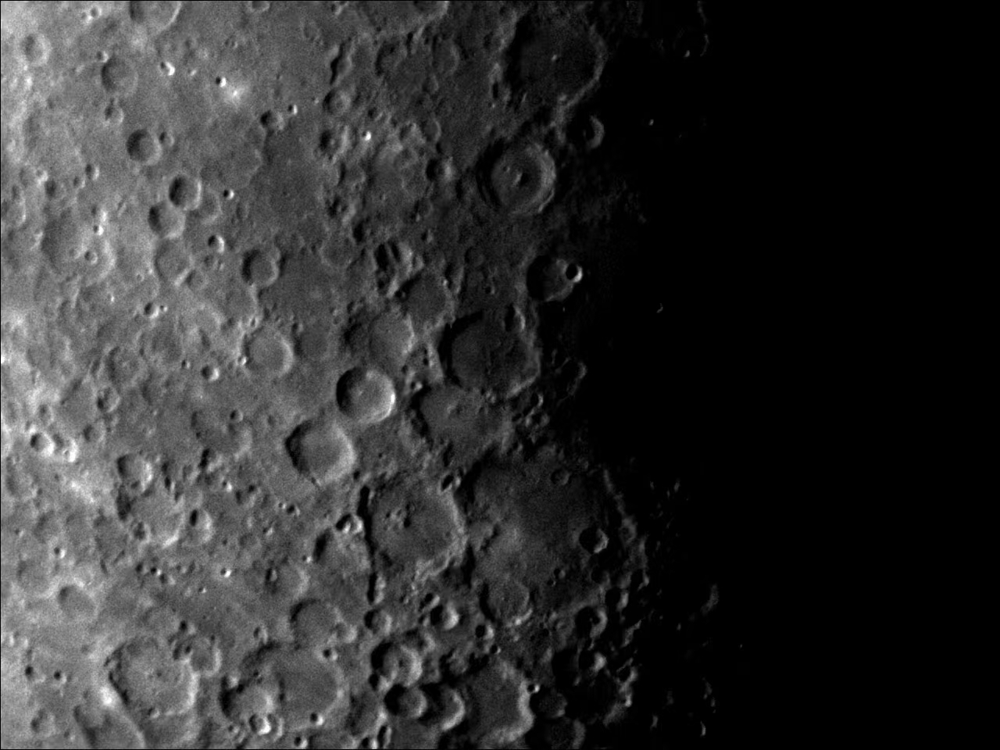
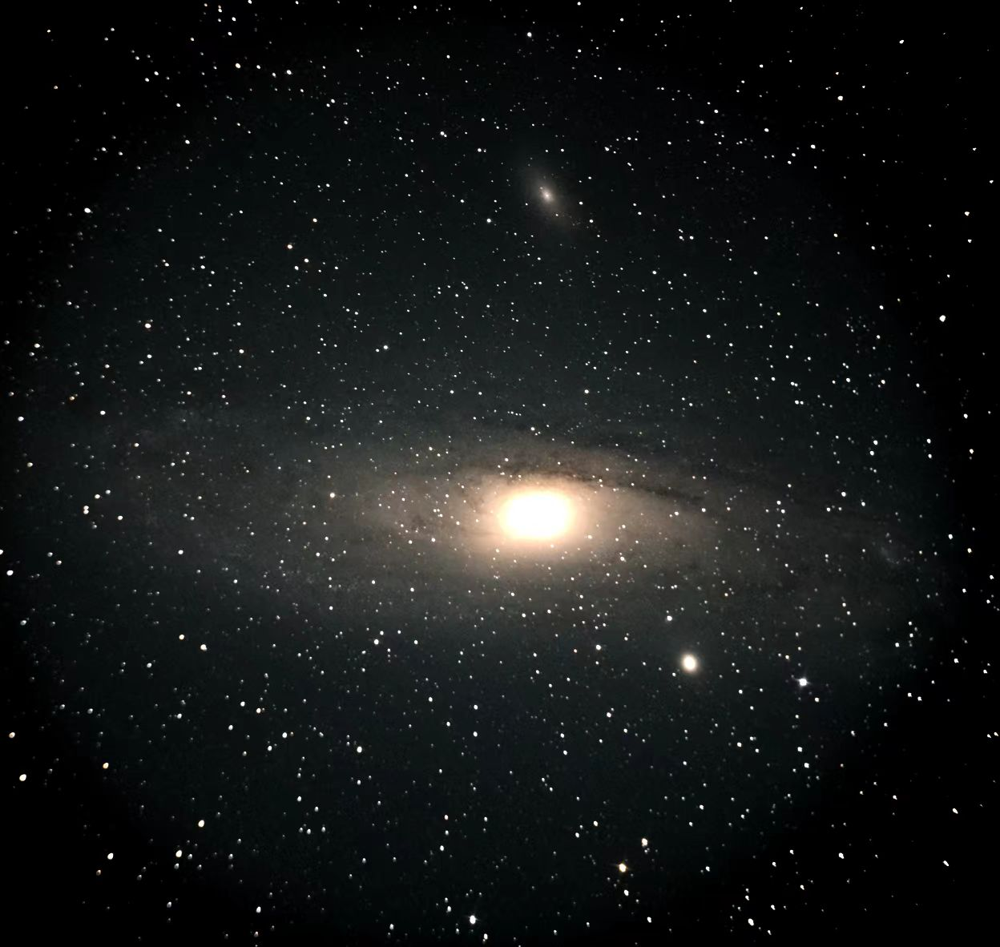

I am a Ph.D. candidate in the Department of Pricision Instrument at Tsinghua University and advised by Lingjie Kong.
My current research interests focus on multi-photon imaging.
I am interested in developing new imaging system and setup related to high speed two photon imaging and two photon optogenetics technique. I received a B.E. degree in Pricision Instrument and a minor degree in Computer Science from University of Science and Technology of China in 2019. |
(*) denote equal contribution
Two photon imaging
High-speed, multi-modal, label-free imaging of pathological slices with a Bessel beam
Chi Liu*, Zhifeng Zhao*, Cheng Jin, Ying Xiao, Guoqiang Gao, Hao Xie, Qionghai Dai, Hongfang Yin, and Lingjie Kong
Biomedical Optics Express, 2020
All-optical physiology system
Interrogation of inter-layer neuronal connectivity via cross-region all-optical physiology with high temporal resolution
Chi Liu*, Yuejun Hao*, Yi Zhong, Lingjie Kong, Bo Lei
Biorxiv, 2023
High-axial-resolution optical stimulation of neurons in vivo via two-photon optogenetics with speckle-free beaded-ring patterns
Cheng Jin*, Chi Liu*, and Lingjie Kong
Photonics Research, 2022
Other Works
Simultaneous dual-region two-photon imaging of biological dynamics spanning over 9 mm in vivo
Chi Liu, Cheng Jin, Junhao Liang, Junhao Deng, Licheng Zhang, Lingjie Kong
Under Review, 2023
Hezhi Scholarships, 2017
National Scholarships, 2019
Tsinghua IDG/McGovern Institute of Brain Sciences Annual Excellent Academic Report Award, 2023
|  | Moon |
|  | Andromeda |